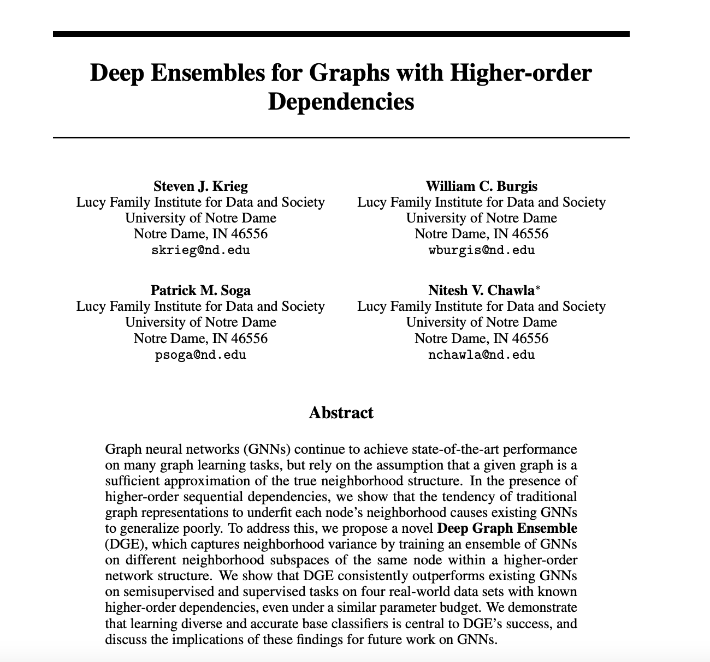
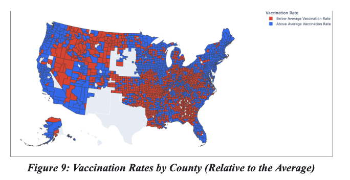
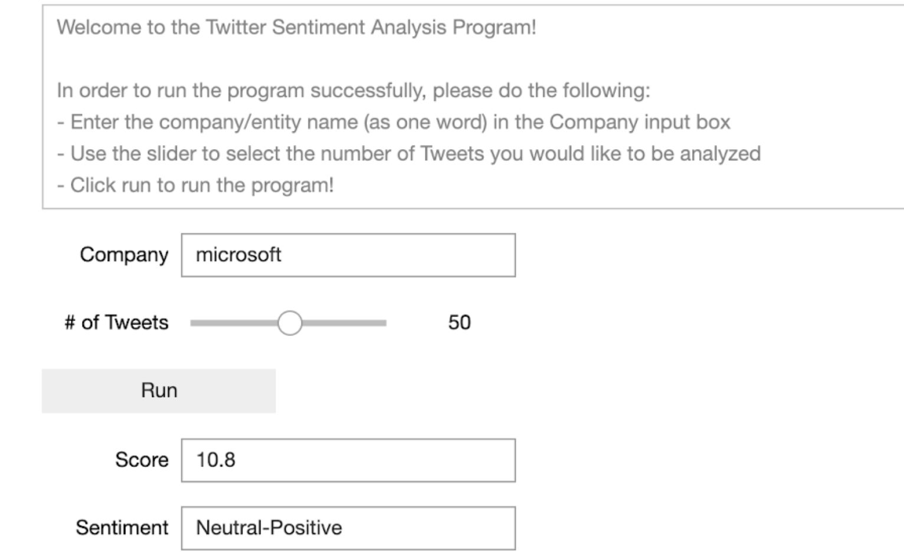
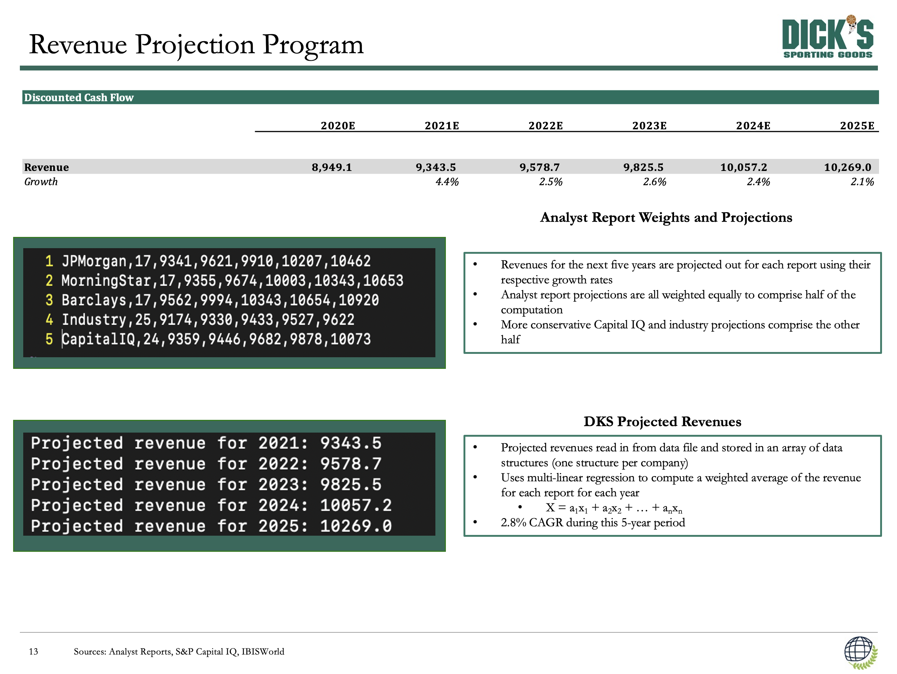
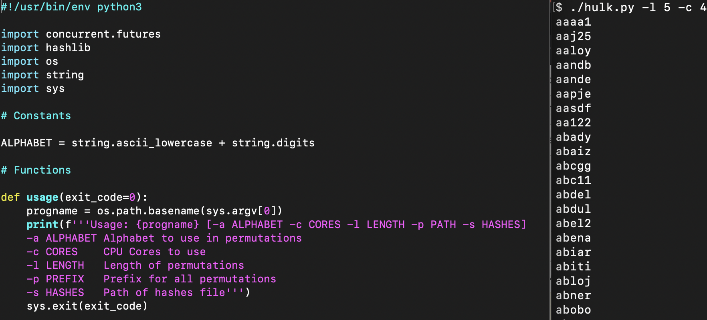
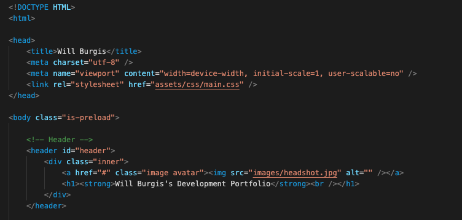

Deep Ensembles for Graphs with Higher-order Dependencies

During my year and a half of undergraduate research at Notre Dame, I have worked
closely with Steven Krieg in researching Graph Neural Networks (GNNs)
and the roles that higher-order dependencies play within them. I contributed to the
creation of the
GrowHON and
HONGNN models
and determined their effectiveness on various datasets. This work resulted in our publication
of "Deep Ensembles for Graphs with Higher-order Dependencies," which I am a Co-Author of. Click
HERE to read the paper!
Predicting U.S. County Vaccination Rates with Classifiers

Over the past 2+ years, the COVID-19 pandemic has consumed our lives,
media sources, and more. It has presented American society with a public health
crisis that has not been seen in generations. As a result, my team and I developed
this project using classifiers to classify United States county vaccination rates
as above or below average in an attempt to empower those fighting the COVID-19 pandemic with
the knowledge to combat vaccine hesitancy at the county level. We employed Random Forest,
Neural Network, Naïve Bayes, CART, Decision Tree, SVM, and KNN classification methods with
5-fold cross-validation to predict the vaccination rates of these counties. Ultimately, we
determined Random Forest to be the most optimal classifier, and our project was voted the best
out of all 18 submissions. To read paper and learn more, click
HERE!
AWS Preternship Project

In this project, my team and I created a program that could act
as a sentiment calculator in order to determine how a particular
company is trending on Twitter. We used Tweepy to interact with the Twitter API
and scrape Tweet content, interfaced the program with AWS Comprehend, and created
a Python algorithm to determine the company's overall trending sentiment. Throughout the
course of the project, we identified critical dependencies and design considerations,
delivered weekly code reviews and professional memorandums detailing project progress,
assessed risks and alternatives, and determined new project objectives based on those
assessments.
DICK'S Sporting Goods Strategic Advisory Project

For this project, my team and I conducted M&A, LBO, and equity analyses of Dick's Sporting Goods
(NYSE: DKS), after which we proposed that Dick’s should acquire two private companies,
Custom Ink ($872M) and Hudl ($415M), to expand their online presence and customization
segment and further their involvement within the youth sports industry. In order to
generate a comprehensive projection of Dick's future revenues, I created a C program
to project 5 years of revenues for Dick’s Sporting Goods (NYSE: DKS) using linear
regression of a series of analyst reports. We ultimately valued Dick’s at an implied
share price of $54.76 and an enterprise value of $5.63B.
Hulk.py

This project involved the use of functional programming and data processing in Python
in order to simulate a brute-force attack on a large collection of passwords. Several
fields can be taken as inputs from the user, including the characters in the "alphabet"
to be used, the number of CPU cores, the length of each permutation, any prefixes to
the permutations, and a file path that the hashes could be stored in.
This Website

I created this website using HTML, CSS, and Javascript. As a starting point, I used the
HTML5 Up Strata template, which can be found here.
{kind=link}
{kind=link}
{kind=link}
{kind=link}
{kind=link}
{kind=link}